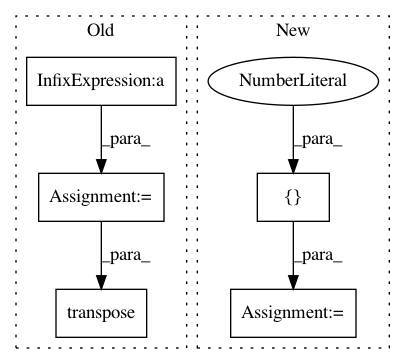

08014eea360fd8d66b7baab19cdb9335f52c167b,keras/backend/tensorflow_backend.py,,repeat,#Any#Any#,760
Before Change
the output will have shape (samples, 2, dim)
"""
assert ndim(x) == 2
tensors = [x] * n
stacked = tf.pack(tensors)
return tf.transpose(stacked, (1, 0, 2))
def tile(x, n):
if not hasattr(n, "shape") and not hasattr(n, "__len__"):
After Change
"""
assert ndim(x) == 2
x = tf.expand_dims(x, 1)
pattern = tf.pack([1, n, 1])
return tf.tile(x, pattern)
def tile(x, n):
In pattern: SUPERPATTERN
Frequency: 3
Non-data size: 5
Instances
Project Name: keras-team/keras
Commit Name: 08014eea360fd8d66b7baab19cdb9335f52c167b
Time: 2016-08-24
Author: francois.chollet@gmail.com
File Name: keras/backend/tensorflow_backend.py
Class Name:
Method Name: repeat
Project Name: GPflow/GPflow
Commit Name: bd1e9c04b48dd5ccca9619d5eaa2595a358bdb08
Time: 2020-01-31
Author: st--@users.noreply.github.com
File Name: gpflow/kernels/misc.py
Class Name: Coregion
Method Name: K
Project Name: GPflow/GPflow
Commit Name: e100ca38ae807eb1bb5a8e1c5b41b7fe253d4849
Time: 2019-03-25
Author: art.art.v@gmail.com
File Name: gpflow/conditionals/util.py
Class Name:
Method Name: base_conditional